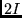
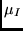
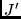
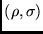
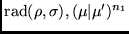
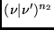

Next: File IO
Up: HFS
Previous: hfs Program Structure
Contents
The user provides the following input data:
- Name of state
This program requires that the name of the sate, denoted
here as <name>, to be specified. The program expects
expects all data from <name>.c, <name>.w and either
of <name>.l, or <name>.j.
- Type
The following options are provided;
- only diagonal  and  factors.
- both diagonal and off-diagonal and factors
- only the coefficients of the radial matrix elements
For the last option all needed input data is in the
configuration input file <name>.c .
- Hyperfine parameters
The hyperfine parameters
and 
can be printed out. (meaningful for pure LS terms).
- Input
The program can use wave function expansion from either an
MCHF or CI calculation.
- Number
Specifies the particular states for which the
and factors to be calculated (when <name>.j contains more
than one state).
- Print-out
In a calculation of the and factors,
values of the
 , and terms are
written to the file <name>.h. Full print-out prints the
values of coefficients and radial matrix elements as well as
the contribution to the different and factors
for every pair of configurations.
, and terms are
written to the file <name>.h. Full print-out prints the
values of coefficients and radial matrix elements as well as
the contribution to the different and factors
for every pair of configurations.
- Tolerance for printing
In the case of a full print-out it is possible to set
a tolerance for printing. If the contribution to a term is
less than the tolerance, then it will not be printed.
- Nuclear data
The user provides:
- 
-  in nuclear magnetons
-  in barns
which are experimental values.
Next: File IO
Up: HFS
Previous: hfs Program Structure
Contents
2001-10-11